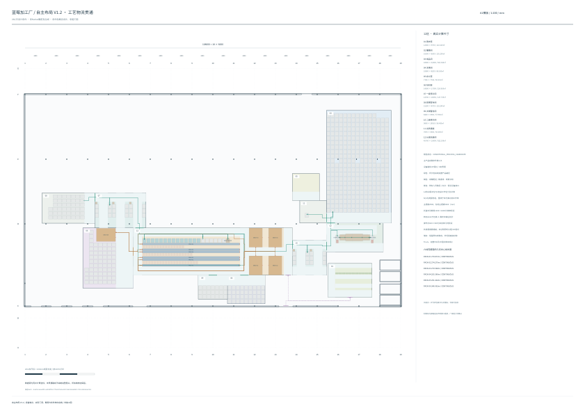

实际生成12区、设备端点、14待冷缓冲与6线托位。 整体候选状态：CONDITIONAL_PROCESS_CANDIDATE。 6条完整条件产品链； FIVE_ERECTORS_SIX_LINES_CONNECTED。 图中仅显示已验证路径。 条件矩形转向不是实际车辆运动学，厂区工程批准及连续产能未成立。
A1 1:200 PDF · 高清PNG · 可缩放SVG · 端点和路径索引 · 原始候选及全部见证 · A1对照

| 包装线 | 中心线长度 | 状态 |
|---|---|---|
| PACK-01 | 279.872m | CONTINUOUS_CONDITIONAL_CHAIN |
| PACK-02 | 274.270m | CONTINUOUS_CONDITIONAL_CHAIN |
| PACK-03 | 270.568m | CONTINUOUS_CONDITIONAL_CHAIN |
| PACK-04 | 255.366m | CONTINUOUS_CONDITIONAL_CHAIN |
| PACK-05 | 251.664m | CONTINUOUS_CONDITIONAL_CHAIN |
| PACK-06 | 246.062m | CONTINUOUS_CONDITIONAL_CHAIN |
14缓冲位与6线工作位不重复计数； N/S为服务组，在本方案独立北侧工作带重新组织。 包材货位仍满足67位。 全部源、目标、门洞、转向及障碍身份可在JSON复核； 未以旧房间中心连线代替设备路径。
柜机门面、搬运包络和操作空间为未批准假设。 共享通道需调度，逐条几何通过不代表同时交通通过。 4.8kg/3.2kg及生产节拍保持B3/B4条件，未重新计算产能。 H5真实功能仍INPUT_REQUIRED。 Truck、完整P2D、工程批准和工厂适用性均未成立。